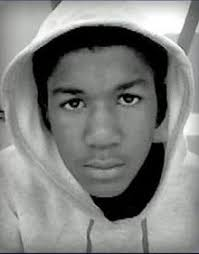

 Trayvon Martin 02/5/95 - 02/26/12 (Killed by Officer Zimmerman at 17 years old)
Police Brutality is unlawful brutality on citizens of whom the Police should be protecting. There has been more Police related shootings then in any other country in the world. If change doesn't come there's bound to be societal repercussions. It'll invite more violance as minorities continue to see their own gunned down. There has been a campaign launched called Campaign Zero This is a great source of information and directions in how to change the culture around policing and how policing would be involved in our communities.